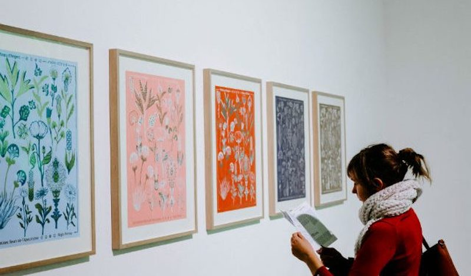
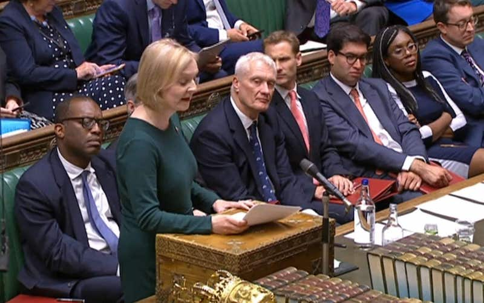

All posts
Peak Newsletter? That Was 80 Years Ago
In the 1940s, journalists fled traditional news outlets to write directly for subscribers. What happened next may be a warning.
Israt Ahmed
23/09/2022
Art and Culture
How Soo Kim Uses Heat and Ink to Create Flowing Artworks
Using a heat gun to manipulate layers of ink on canvas.
Israt Ahmed
23/09/2022
Cook
Party Food
The knock on the door which marks the beginning of a great party isn't the first guest, it's your COOK party food delivery. Whether it's a full-on, sit-down meal with hot party food, a sumptuous spread of delicious buffet food, or drinks and canapés, we've got you covered with our delicious selection of frozen party food.
Israt Ahmed
23/09/2022
Travel
Staying in the Munduk area
Many people do a day trip to the Munduk area for the temple at Tamblingan Lake. Actually staying in Munduk will give you the time to see even more beautiful places. The area is a little cooler and can feel really comfortable. Waterfalls, swings, coffee, trekking, Munduk has it all. From Gadugan to Munduk is a solid 2.5-hour drive.
Israt Ahmed
23/09/2022
News
New UK Prime Minister Liz Truss vows to 'get Britain working again'
She insisted Britain could “ride out the storm” of the twin economic and energy crises facing the nation, while acknowledging the “severe global headwinds” she is up against. She promised three early priorities as PM — delivering on the economy, on energy and on the crisis-ridden National Health Service, reiterating her promise of “bold” tax cuts and reform.
Israt Ahmed
23/09/2022
Sport
Gareth Southgate doesn't make it out in time to talk to Channel 4, who must be thinking they've been sold a right pup with this England deal.
That's five matches they've shown. Three defeats, two draws, and the only goal England have scored is a Harry Kane penalty. Not sure they've transmitted anything as relentlessly downbeat since the days of Murun Buchstansangur.